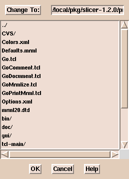
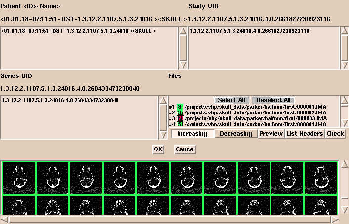

Slicer now supports reading DICOM (digital imaging and communications in medicine) Version 3.0 CT and MRI images.
(The SPL gratefully acknowledges Attila Tanacs for the work he did to add this
powerful capability to Slicer.)
Currently, segmented and otherwise modified
DICOM images are written in the same format as other images that Slicer reads.
(For example, the images are written in big-endian format and numbered imagename.001 to
imagename.xxx.)
To read DICOM files with Slicer:
-
On the Main menu, click Data.
- Click Add Volume. The Props panel appears.

-
Click DICOM. (Not all the letters of DICOM may be visible.)
-
Click Select Dicom Volume. (A file browser window appears.
This browser does not sort the file names alphabetically.
If there are many files in a directory,
it may be easier to type the path to the images than to use the browser.)

-
Select an image and click OK.
A window appears, displaying patient information, studies, series, and files.
(If there are many images in the directory, it may take a while for the information to appear.)

- In this window, options include:
- Select or deselect images to load. Selected images are
shown in green and deselected images are shown in red.
- Click Increasing or Decreasing to load images in
increasing or decreasing order.
- Click Preview to display images as small icon-size images in the bottom panel.
You can change the size of the previewed images. The default
size is 32x32 pixels.
- Click List Headers to display header information about the
geometry of each image in the series.
- Click Check to display information about the volume and how
to group the data. With DICOM data, the organization of the data is
not always apparent. Check examines the slice location and thickness of each image
in the volume to make sure all slices are the same distance apart.
This helps to show when slices are missing.
This is also useful when several DICOM acquisitions are lumped together.
-
After the data is organized properly, click OK.
- Click Extract Header.
This
displays the information extracted from the headers describing the
dataset.